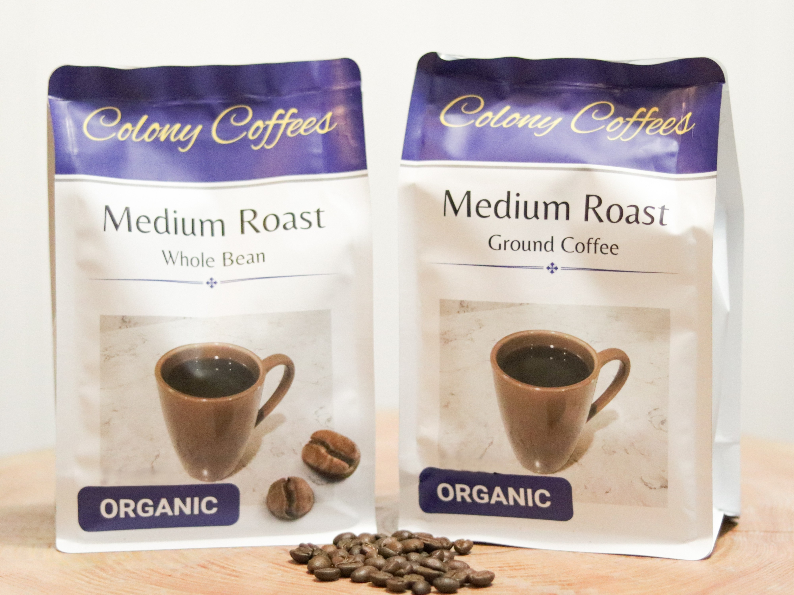
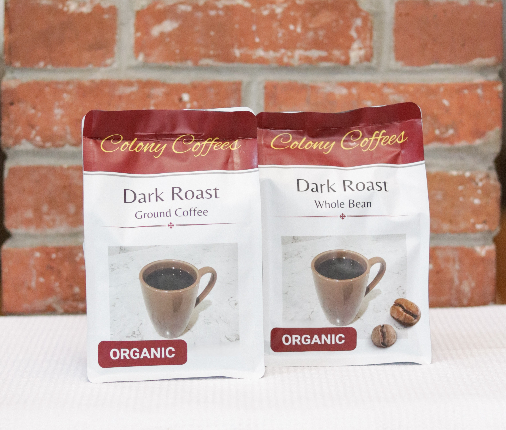
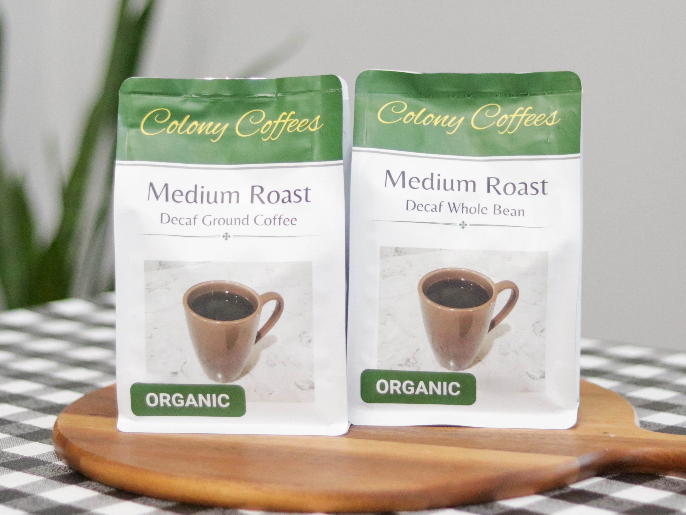
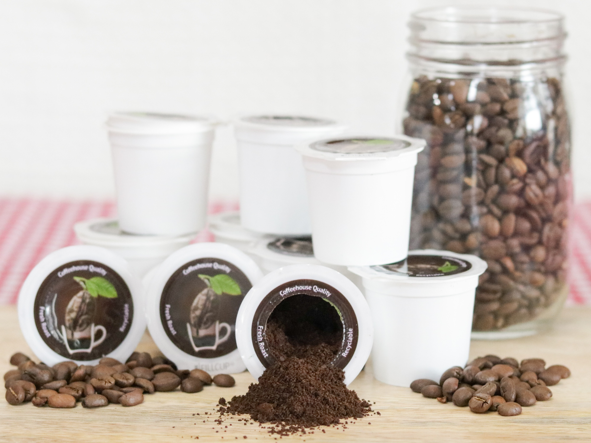

Our unique combination of organic Arabica-grown coffee will re-invent your mornings. A delighful mixture of smooth and silky flavors, our medium roast is hand-roasted locally in small batches to ensure that you are recieving the highest quality.


Full-bodied and bold, our dark roast brings big flavor in every sip. Harvested in the highlands of Colombia, Peru, and Guatemala and hand-roasted in small batches, you can sit down and enjoy a brew that's both organically grown and truly local.
Coffee anytime? No worries. Our decaf coffee is decaffeinated without the use of chemicals, keeping things pure and simple. We're delighted to offer you a mindful choice that still delivers a full, warm flavor. Enjoy the comfort of your favorite brew without the buzz.


With our single serve cups, you're all set. Roasted and hand-packaged locally, we take great satisfaction in delivering this little cup of organic happiness.